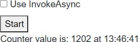
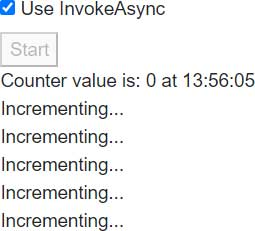

In circumstances where our code is called by a non-UI event (such as the ones outlined in Multi-threaded rendering), we would ordinarily need to implement some kind of thread locking/synchronisation if we intend to manipulate state.
Recap: Non-UI events include:
- A callback from a System.Threading.Timer
- An event triggered by another thread on a Singleton instance shared by multiple users
- A data push from another server we've connected to via a Web Socket.
To avoid having to write thread-safe code, people writing a WPF app might use Dispatcher.Invoke to ensure the UI thread executes the code, and WinForms developers might use the Invoke method of the form. Any code invoked in this manner is always executed by a specific thread (the UI thread), which avoids the use for thread sychronising code.
The StateHasChanged framework method, which is used to tell Blazor to re-render our component, does not allow multiple threads to access the rendering process at the same time. If StateHasChanged is called by a secondary thread an exception will be thrown.
System.InvalidOperationException: The current thread is not associated with the Dispatcher.
In a server-side Blazor application, there is a single dispatcher associated with each connection (each browser tab). When we use InvokeAsync we are executing actions via this dispatcher (just like WPF Dispatcher.Invoke or WinForms Control.Invoke).
When calling StateHasChanged in one the previously outlined scenarios (executing code from a Thread etc), it is necessary to invoke it via the InvokeAsync() method. The InvokeAsync will serialise the work, and so will avoid StateHasChanged throwing an exception.
Although methods will be executed by any number of different threads, only one thread will be accessing components at any given moment, eliminating the need to write thread-locking/synchronisation code around shared state.
InvokeAsync example

To demonstrate the different in behaviour between executing component methods directly from a thread vs executing via InvokeAsync, we'll create a server-side application that will show how multiple concurrent threads can corrupt shared state.
After creating a new Blazor server-side application, add a static class that will store an integer value that can be accessed by multiple components/threads.
public static class CounterState { public static int Value { get; set; } }
Displaying the state
We'll show the value of this state in a component, and have the value checked twice per second. To do this, we'll create a component in the /Shared folder named ShowCounterValue.razor.
@implements IDisposable
@code { private System.Threading.Timer Timer;
protected override void OnInitialized()
{
base.OnInitialized();
Timer = new System.Threading.Timer(\_ =>
{
InvokeAsync(StateHasChanged);
}, null, 500, 500);
}
void IDisposable.Dispose()
{
Timer?.Dispose();
Timer = null;
}
}
- Line1
Declares our component implementsIDisposable - Line 3
Displays the current value ofCounterState.Valuealong with the current time. - Line 13
When the component initialises, aSystem.Threading.Timeris created that will executeStateHasChangedevery 500 milliseconds. It is invoked viaInvokeAsyncto prevent Blazor throwing an exception telling us we are callingStateHasChangedfrom a thread. - Line 21
Disposes the timer when the component is disposed.
Note: If the timer is not disposed then it will remain active for the lifetime of the user session. If the timer remains active, then the component will not be garbage collected because the timer callback holds an implicit reference to the component via its InvokeAsync and StateHasChanged methods.
Modifying the state
We'll now create a component that will increment the CounterState.Value field. Each component will perform a loop in a thread and update the Value 1000 times. We can then have multiple instances of this component on our main page, to ensure multiple threads are updating the state.
Note: This component will be passed a System.Threading.WaitHandle. The component's thread will be suspended until the main page triggers this WaitHandle, triggering all threads to start looping at the same time.
In the /Shared folder, create a new file named IncrementCounter.razor. We'll start off with some text to show the component exists on the page, a parameter to accept the required WaitHandle, and a parameter to indicate if we want to use InvokeAsync to increment the value or not.
[Parameter]
public System.Threading.WaitHandle Trigger { get; set; }
// More to come
}
To increment the CounterState.Value, we'll create a thread in the OnInitialized lifecycle method. We'll start the thread immediately, but the first instruction in the thread will be to suspend itself until our WaitHandle is triggered.
protected override void OnInitialized() { var thread = new System.Threading.Thread(_ => { Trigger.WaitOne(); for (int i = 0; i < 1000; i++) { if (!ShouldUseInvokeAsync) { CounterState.Value++; } else { InvokeAsync(() => CounterState.Value++); } } });
thread.Start();
}
- Line 1
OverrideOnInitialized. - Line 3
Create aThreadto modify the shared state. - Line 5
The first thing the thread should do is to wait for the parent page'sWaitHandleto be triggered. - Line 6
Perform 1000 changes to the shared state. - Line 8
Check if we should useInvokeAsyncor not. - Line 10
Change the shared state directly from theThread. - Line 14
UseInvokeAsyncto ensure sequential access when changing the shared state. - Line 19
Start theThreadso it can wait to be triggered.
Using the components to demonstrate state conflict
The final step is to create some mark-up in our Index page that will create 5 of these components.
To make the application more interesting, we will also
- Have a checkbox that will allow the user to specify if they want state changes to be performed via
InvokeAsync. - Allow the user to reset the state of the app and try again by clicking a button.
We'll need some component state in our Index page to indicate that we are currently running a test, if the user wants to use InvokeAsync, and a System.Threading.ManualReset object that we can pass to our IncrementCounter to trigger the processing of their threads.
private bool IsWorking; private bool UseInvokeAsync; private System.Threading.ManualResetEvent Trigger = new System.Threading.ManualResetEvent(false);
For the mark-up, we'll need to use Two-way binding to bind our IsWorking field to an HTML <input> element.
Followed by a button the user can click to start a test run. The button should be disabled during the duration of a test run.
We'll also want to use our ShowCounterValue to keep our user informed of the current value of CounterState.Value.
And, finally for the mark-up, we will want to create 5 instances of the IncrementCounter component. These components will only be created once the test run starts, and will be disposed of once the run has completed. To achieve this, we only render them if IsWorking is true.
@if (IsWorking)
{
for (int i = 0; i < 5; i++)
{
- Line 1
Only renders the components ifIsWorkingistrue, indicating that a test run is in progress. - Line 3
A loop to create 5 instances of ourIncrementCountercomponent. - Line 5
Creates an instance ofIncrementCounter, passing in ourManualResetEvent(Trigger) and abooleanindicating if the user clicked Use InvokeAsync in the UI or not.
The only code we have to write now is the Start method. This will simply reset the state, set IsWorking to true, trigger our components to start incrementing, and then set IsWorking to false.
The Index page should now look like so:
@page "/"
@code { private bool IsWorking; private bool UseInvokeAsync; private System.Threading.ManualResetEvent Trigger = new System.Threading.ManualResetEvent(false);
private async Task Start()
{
CounterState.Value = 0;
IsWorking = true;
StateHasChanged();
await Task.Delay(500);
Trigger.Set();
await Task.Delay(1000);
IsWorking = false;
Trigger.Reset();
}
}
- Line 3
Bind an HTML<input>toUseInvokeAsync. - Line 7
A button that executes theStartmethod when clicked. The button is disabled ifIsWorkingistrue. - Line 9
Updates the UI with the current value ofCounterState.Value. - Line 14
Render someIncrementCountercomponents, but only ifIsWorkingistrue. - Lines 26-28
Reset the shared state to zero. - Line 30
Wait for 500 milliseconds to give the threads in all of the components a chance to get started. - Line 31
Trigger ourManualResetEvent(Trigger) so that allIncrementCountercomponents' threads can resume and start to modify shared state at the same time. - Lines 33-35
Wait 1 second for the test to complete, and then resetIsWorkingand ourManualResetEventso they are ready for another rest run.
Running the example application
Running without InvokeAsync
Run the application, and for the first test leave the Use InvokeAsync checkbox unticked. Then click the Start button and you'll see something like the following image.

Followed 1 second later with a screen that looks like the following image. Note how the final CounterState.Value in my case is only 1202. Considering there are 5 components, each incrementing the value by 1 in a 1000 iteration loop, ideally we should be seeing 5000 as the final value.

Running with InvokeAsync
Next, tick the checkbox and click the Start button again.

One second later, the rest run will complete and we see a much more desirable result.

Summary
When working with UI triggered events (button clicks, navigation events, etc), we don't need to make any special considerations for thread safety. Blazor will manage this for us, and ensure only a single thread is executing component code at any one time.
When non-UI events trigger our code, then in a server-side Blazor app then this code will be triggered in an unsynchronised thread. It is not possible to call StateHasChanged, and access to any shared state is prone to corruption due to thread race conditions.
Note: Blazor WebAssembly apps are single-threaded so do not have to account for thread safety.
The Blazor InvokeAsync, introduced on the class ComponentBase, will ensure that race conditions do not occur by synchronising thread execution per-user connection.
Blazor is able to ensure that only a single thread is executing code at any given time by executing code via a Dispatcher that is created when a user connects to the Blazor server-side application.
One possible complication to consider is that the Blazor Dispatcher will not ensure an entire piece of code runs to execution before the next dispatched code is executed. If all of the actions dispatched are synchronous code then this is the case, however, if any of the dispatched actions are asynchronous then that thread will relinquish its execution time as soon as it executes an await on some asynchronous code such as Task.Delay or an HTTP request.
This means that although Blazor's InvokeAsync can guarantee threads are synchronised in their execution, it does not mean we can do without thread-safe code when using asynchronous resources such as queries to Entity Framework Core.
The following code executed by two separate threads will result in more than one thread trying to use the same Entity Framework Core DbContext at the same time, even when invoked via InvokeAsync.
IsLoading = true; StateHasChanged();
Person[] people = await ApplicationDbContext.Person.ToArrayAsync(); IsLoading = false;
This is because the await statement relinquishes execution and allows Blazor to let a different logical chunk of code to execute.
| First InvokeAsync | Second InvokeAsync |
| --- | --- |
| IsLoading = true;
StateHasChanged();
... await | |
| | IsLoading = true;
StateHasChanged();
... await |
| Person[] people =
(result from await) | |
| | Person[] people =
(result from await) |
In the preceding illustration, at step 2 the ApplicationDbContext has been instructed by two separate threads to perform an asynchronous operation. Because Entity Framework Core does not support thread reentrancy, it will throw an exception telling us that only a single thread may access the DbContext at any given time.
So, although shared state is safe in synchronous code when executed via InvokeAsync, keep in mind that as soon as your code introduces an await it allows other threads the opportunity to step in until the await is complete.